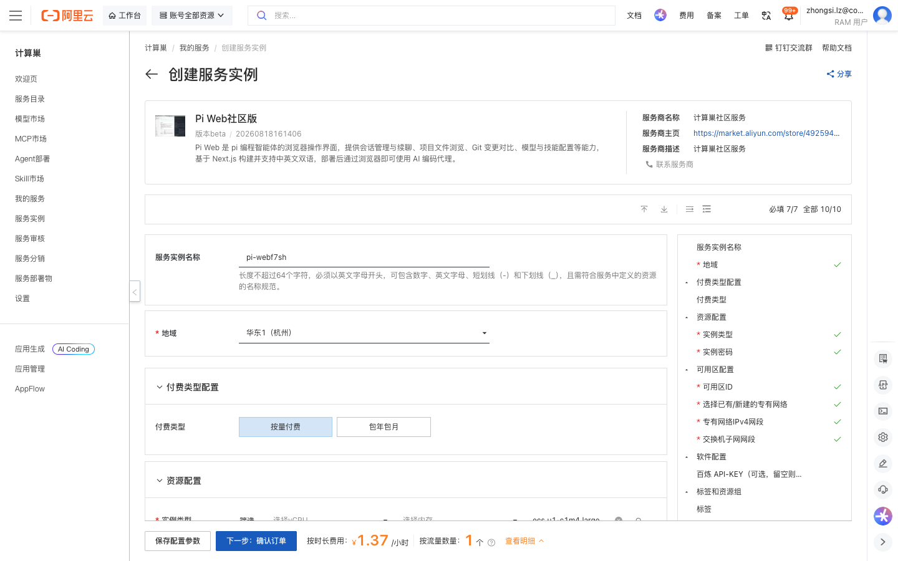
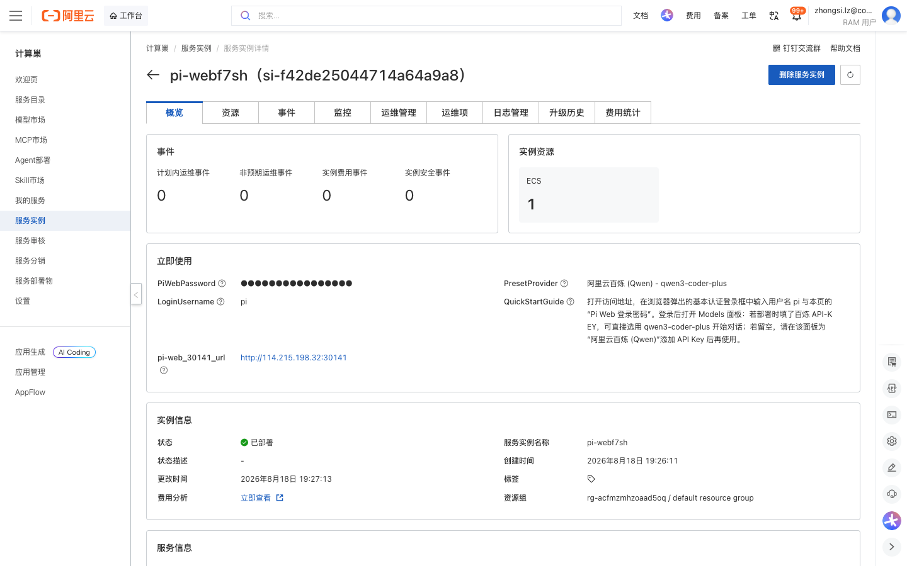
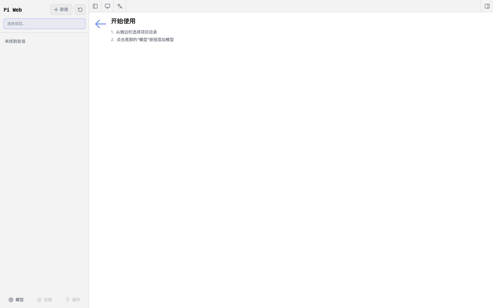

Pi Web社区版 部署文档
概述
Pi Web社区版 是 pi 编程智能体的浏览器操作界面，提供会话管理与续聊、项目文件浏览、Git 变更对比、模型与技能配置等能力，基于 Next.js 构建并支持中英文双语。通过阿里云计算巢服务，您可以在 ECS 上一键部署 Pi Web，部署完成后通过浏览器即可使用 AI 编码代理，无需手动安装 Node.js 与相关依赖。
部署流程
1. 创建服务实例
访问 Pi Web社区版 服务部署链接，按提示填写部署参数：
需要关注的参数：
- 实例类型：建议选择 2 vCPU / 8 GiB 及以上规格（示例：
ecs.u1-c1m4.large）。 - 实例密码：用于远程登录 ECS 服务器，长度 8–30 位并满足复杂度要求。
- 可用区 / 专有网络：可使用默认的新建专有网络，或选择已有网络。
- 百炼 API-KEY（可选）：填入后部署即可直接使用阿里云百炼
qwen3-coder-plus模型；留空也能正常部署，登录后在 Models 面板再添加模型 Key 即可。

2. 确认订单并创建
参数填写完成后可以看到对应询价明细，确认参数后点击 下一步：确认订单。确认订单完成后同意服务协议并点击 立即创建 进入部署阶段。
3. 等待部署完成
等待部署完成后进入服务实例详情页。在 立即使用 区可以看到以下信息：
| 输出项 | 说明 |
|---|---|
pi-web_30141_url |
Pi Web 访问地址（端口 30141） |
LoginUsername |
登录用户名，固定为 pi |
PiWebPassword |
Pi Web 登录密码（部署时自动生成的随机密码） |
PresetProvider |
预置模型 Provider（阿里云百炼 Qwen / qwen3-coder-plus） |
QuickStartGuide |
快速使用说明 |

4. 访问服务
单击 pi-web_30141_url 访问地址，浏览器会弹出基本认证登录框。输入用户名 pi 与实例详情页中的 Pi Web 登录密码 登录。
登录后进入 Pi Web 界面：从左侧边栏选择项目目录，点击底部的 模型 按钮配置模型（若部署时未填写百炼 API-KEY，请在此为「阿里云百炼 (Qwen)」添加 API Key），随后即可新建会话，开始与 AI 编码代理对话。

已知行为说明
- 登录鉴权：Pi Web 采用 HTTP Basic 认证，用户名固定为
pi，密码为部署时自动生成的随机密码。请妥善保管密码，勿在公开渠道泄露。 - 模型配置：若部署时未填写百炼 API-KEY，首次登录后需在 Models 面板添加模型 Key，模型选择器方可使用。
- 数据持久化：会话记录与模型/凭证配置保存在服务器
~/.pi/agent目录下（auth.json/models.json/sessions/*.jsonl）。 - 使用须知：本服务基于第三方开源项目 pi-web（MIT 许可证）构建，阿里云计算巢仅提供云资源与部署入口。Pi Web 可在您的授权下执行 Shell 命令，请仅在受信任的网络环境中使用，并注意合理管理云资源费用。
官方文档
更多信息请访问项目仓库：pi-web on GitHub
© 2009-2022 Aliyun.com 版权所有